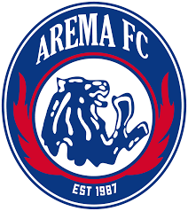
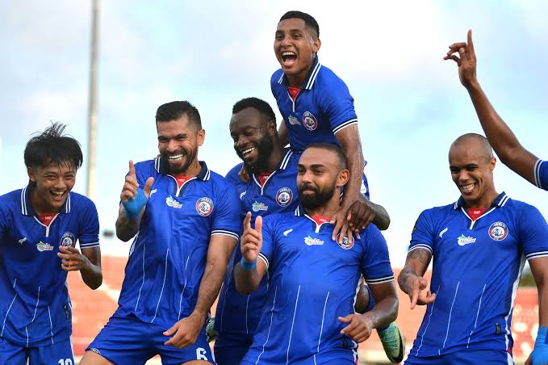
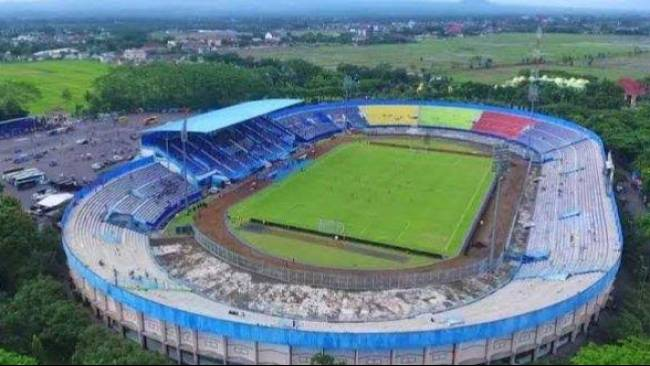

Salam Satu Jiwa

Klub sepak bola kebanggaan Malang dengan semangat juang dan loyalitas suporter yang luar biasa.
Arema FC adalah klub sepak bola profesional asal Malang, Jawa Timur, yang berdiri pada tahun 1987. Klub ini dikenal dengan julukan Singo Edan dan memiliki warna kebanggaan biru yang menjadi identitas utama tim.
Arema FC memiliki kelompok suporter besar bernama Aremania. Dukungan mereka membuat suasana pertandingan menjadi lebih hidup dan penuh semangat.
Klub ini telah meraih berbagai prestasi di sepak bola Indonesia dan menjadi salah satu klub paling terkenal di tanah air.


Nomor Punggung : 1
Nomor Punggung : 5
Nomor Punggung : 8
Nomor Punggung : 10
Stadion Kanjuruhan merupakan markas kebanggaan Arema FC yang berada di Kabupaten Malang. Stadion ini menjadi tempat berlangsungnya berbagai pertandingan penting dan dipenuhi oleh dukungan luar biasa dari Aremania.
| Tanggal | Lawan | Stadion |
|---|---|---|
| 20 Mei | Persib | Kanjuruhan |
| 27 Mei | Persebaya | Gelora Bung Tomo |
Instagram : @aremafcofficial
Email : aremafc@gmail.com